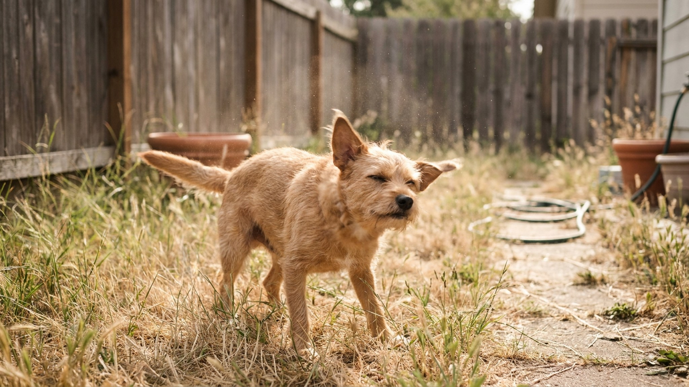

Собака вышла из ветеринарного кабинета, остановилась у входа — и отряхнулась. Как после купания. Но она была абсолютно сухой. Это не случайность и не странность: этологи описали этот жест ещё в 90-х, и у него есть конкретное объяснение. Понимая этот сигнал, вы лучше чувствуете, как ваша собака переживает разные ситуации.
🐾 Экономьте на лишних визитах к врачу
Сначала спросите AI-ветеринара в AnimaLife — часто этого достаточно, чтобы понять, нужен ли визит к врачу.
Норвежский этолог и тренер Тюрид Ругос в книге «Calming Signals» (1997, переведена на 30+ языков) описала систему сигналов, которые собаки используют для снижения напряжения — своего и партнёра по взаимодействию. Она назвала их «успокаивающими сигналами» (calming signals).
В список вошли: облизывание носа, отворачивание взгляда, зевота, медленное движение, замирание, присаживание, игровой поклон — и отряхивание. Эти сигналы собаки посылают не только другим собакам, но и людям. Большинство хозяев их не замечают — не потому что невнимательны, а потому что их никто не учил замечать.
Отряхивание — один из наиболее заметных сигналов, именно потому что оно выглядит «неуместно»: вода ни при чём.
Отряхивание — это быстрая волна мышечного сокращения от головы до хвоста. Биомеханически оно сбрасывает мышечное напряжение, накопившееся в результате стресса или возбуждения. При стрессе мышцы непроизвольно напрягаются (у людей тоже — именно поэтому мы «расправляем плечи» после тяжёлого разговора).
Исследования показывают: после отряхивания у собак заметно снижается частота сердечных сокращений. Это физиологически реальный сброс напряжения, а не просто «жест».
С эволюционной точки зрения это логично: тот же рефлекс у водных животных используется для удаления воды с шерсти, и этот нейронный путь у собак «перепрофилировался» для сброса напряжения. Мозг использует уже готовый механизм.
Контекст — главное при чтении этого сигнала. Вот наиболее частые ситуации:
Отряхивание — это информация. Когда собака отряхивается, она говорит вам: «этот эпизод был немного напряжённым для меня». Это не паника и не «всё плохо» — это нормальная обратная связь.
Что делать с этой информацией:
Отряхивание всего тела и тряска только головой — разные сигналы с разными причинами. Тряска только головой (без тела) — часто физический дискомфорт в ушах. Если собака трясёт именно головой, часто, и с видимым усилием — это повод для осмотра ветеринаром, не поведенческий сигнал.
Отряхивание всего тела: от носа волна идёт к хвосту, уши хлопают, вся шерсть «взрывается» на секунду. Это поведенческий сигнал.
🐾 Всё о вашем питомце — в одном приложении
AI-ветеринар, дневник, напоминания о прививках и уходе. Установите AnimaLife — это бесплатно, в Telegram и MAX.
🐾 Понравился разбор?
Подпишитесь на канал — каждый день разбираем по одному тревожному симптому у кошек и собак: что в пределах нормы, а когда пора к врачу. Подпишитесь, чтобы не пропустить разбор, который может спасти здоровье вашего питомца.
Если вы замечаете, что отряхиваний стало значительно больше, они происходят в нетипичных ситуациях или сочетаются с другими изменениями поведения (меньше игры, больше прятки, изменение аппетита) — расскажите об этом врачу. Иногда повышение уровня стресса может быть связано с физическим дискомфортом. Ветеринар исключит соматические причины и при необходимости порекомендует работу с поведенческим специалистом.
Отряхивание само по себе — нормальное и здоровое поведение. Это инструмент саморегуляции. Умение его замечать и уважать делает ваше взаимодействие с собакой мягче и честнее для обоих.
Материал носит информационный характер и не заменяет очную консультацию ветеринара.